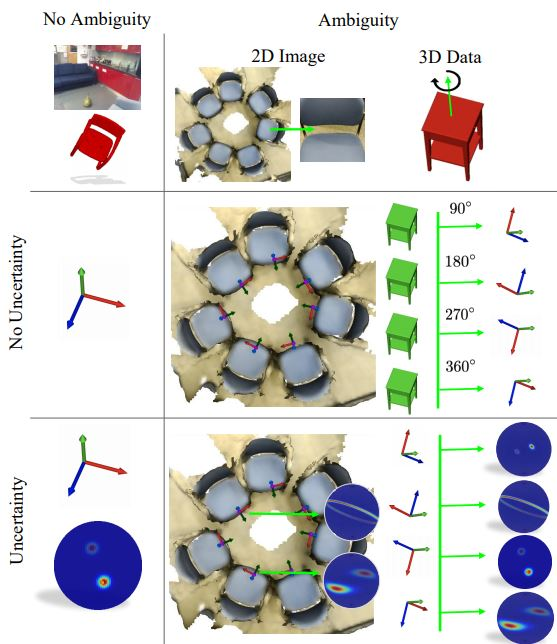
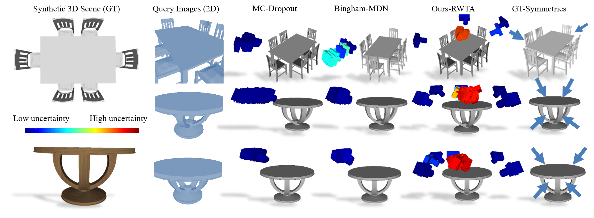
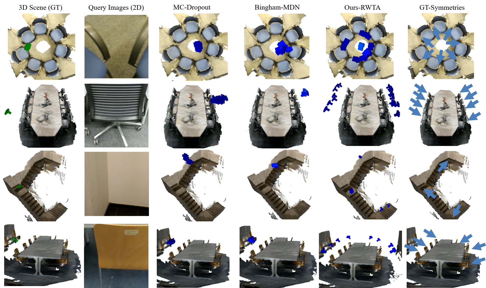
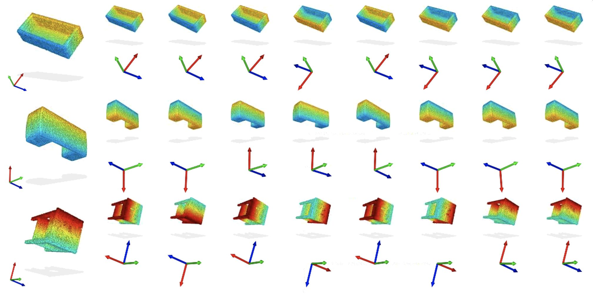

<meta name="viewport" content="width=device-width, initial-scale=1">
<link href='http://fonts.googleapis.com/css?family=Quicksand:300,400' rel='stylesheet' type='text/css'>
<link href='http://fonts.googleapis.com/css?family=Oxygen:400,300' rel='stylesheet' type='text/css'>
<link rel="stylesheet" href="style.css"/>
<link rel="stylesheet" href="https://maxcdn.bootstrapcdn.com/bootstrap/3.4.1/css/bootstrap.min.css">

<style>
	.markdown-body {
		box-sizing: border-box;
		min-width: 200px;
		max-width: 980px;
		margin: 0 auto;
		padding: 45px;
	}

	@media (max-width: 767px) {
		.markdown-body {
			padding: 15px;
		}
	}
</style>
<article class="markdown-body">
    <h1 style="text-align:center">Multimodal Inference for 6D Camera Relocalization and Object Pose Estimation</h1>
    
    <br>
    
    <div class="container">
    <div class="match-author"><a href="http://campar.in.tum.de/Main/MaiBui/"><br><p>Mai Bui</p></a></div>
    <div class="match-author"><a href="http://tbirdal.me/"><br><p>Tolga Birdal</p></a></div>
    <div class="match-author"><a href="http://campar.in.tum.de/Main/HaowenDeng"><br><p>Haowen Deng</p></a></div>
    <div class="match-author"><a href="http://campar.in.tum.de/Main/ShadiAlbarqouni"><br><p>Shadi Albarqouni</p></a></div>
    <div class="match-author"><a href="https://profiles.stanford.edu/leonidas-guibas"><br><p>Leonidas Guibas</p></a></div>
    <div class="match-author"><a href="http://campar.in.tum.de/Main/SlobodanIlic"><br><p>Slobodan Ilic</p></a></div>
    <div class="match-author"><a href="http://campar.in.tum.de/WebHome"><br><p>Nassir Navab</p></a></div>
        </div>
    <p></p>
    
    <!--[Stanford University](http://www.stanford.edu) & [Technical University of Munich](http://www.tum.de) & Siemens AG-->
    <p></p>
    <h5 style="text-align:center"><a href="http://geometry.stanford.edu">Stanford University</a>&nbsp;&nbsp;&nbsp;&nbsp;&nbsp;&nbsp;&nbsp;&nbsp;<a href="http://www.tum.de">Technical University of Munich</a>&nbsp;&nbsp;&nbsp;&nbsp;&nbsp;&nbsp;&nbsp;&nbsp;<a href="http://www.siemens.com">Siemens AG</a></h5>
    <p></p><p></p><br>
    
    <div class="row">
                <div class="col-lg-12 col-lg-offset-0 text-center">
                    <ul class="nav nav-pills nav-justified">
                        <li>
                            <a href="https://arxiv.org/pdf/2004.04807">
                            <image src="docs/ECCV20_thumb2.jpg" height="180px">
                                <h4><strong>ECCV'20 Paper</strong></h4>
                            </a>
                        </li>
                        <li>
                            <a href="https://arxiv.org/pdf/2012.11002">
                            <image src="docs/DBN_thumb2.jpg" height="180px">
                                <h4><strong>Extended Arxiv Version</strong></h4>
                            </a>
                        </li>
                        <li>
                            <a href="https://github.com/Multimodal3DVision/torch_bingham">
                            <image src="docs/github.jpg" height="180px">
                                <h4><strong>Code</strong></h4>
                            </a>
                        </li>
                        <li>
                            <a href="http://campar.in.tum.de/files/AmbiguousRelocDataset/Ambiguous_ReLoc_Dataset.zip">
                            <image src="docs/data.jpg" height="180px">
                                <h4><strong>Data</strong></h4>
                            </a>
                        </li>
                    </ul>
                </div>
        </div>

   
        
       <div class="text-justify">
        <div class="row">
            <div class="col-lg-6 col-md-6 col-sm-12 col-xs-12">
                We introduce <strong>Deep Bingham Networks (DBN)</strong>  a generic framework that can naturally handle pose-related uncertainties and ambiguities arising in almost all real life applications concerning 3D data. While existing works strive to find a single solution to the pose estimation problem, we make peace with the ambiguities causing high uncertainty around which solutions to identify as the best. Instead, we report a <strong>family of poses</strong> which capture the nature of the solution space. DBN extends the state of the art direct pose regression networks by (<strong>i</strong>) a multi-hypotheses prediction head which can yield different distribution modes; and (<strong>ii</strong>) novel loss functions that benefit from Bingham distributions on rotations. This way, DBN can work both in unambiguous cases providing uncertainty information, and in ambiguous scenes where an uncertainty per mode is desired. On a technical front, our network regresses continuous <strong>Bingham mixture models</strong> and is applicable to both 2D data such as images and to 3D data such as point clouds. We proposed new training strategies so as to avoid mode or posterior collapse during training and to improve numerical stability. Our methods are thoroughly tested on two different applications exploiting two different modalities: (<strong>i</strong>) 6D camera relocalization from images; and (<strong>ii</strong>) object pose estimation from 3D point clouds, demonstrating decent advantages over the state of the art. For the former we contributed our own dataset composed of five indoor scenes where it is unavoidable to capture images corresponding to views that are hard to uniquely identify. For the latter we achieve the top results especially for symmetric objects of ModelNet dataset.
            </div>
            <div class="col-lg-6 col-md-6 col-sm-12 col-xs-12">
                
            </div>
        </div>
    </div>
    
    <h2>Overview (ECCV'20 Presentation on Relocalization)</h2>
    <p> 
    <div class="container">
    <p><iframe width="850" height="478" src="https://www.youtube.com/embed/SCKwR1uvNmM" frameborder="0" allow="accelerometer; autoplay; encrypted-media; gyroscope; picture-in-picture" allowfullscreen></iframe></p><br>
    </div>
    </p>
    
    <h2>Dataset and Results onn 6D Camera Relocalization</h2>
    <p>We created a synthetic dataset, that is specifically designed to contain <strong>repetitive structures</strong> and introduce highly <strong>ambiguous viewpoints</strong>:<br>
    </p>

<p><br>In addition, <strong>we captured highly ambiguous real scenes</strong> using <strong>Google Tango and a graph-based SLAM approach</strong>. We <strong>provide RGB images as well as distinct ground truth camera trajectories</strong> for training and testing. 3D reconstructions are also provided for visualization purposes. In comparison to current state-of-the-art methods, our model is able to capture plausible, but diverse modes as well as associated uncertainties for each pose hypothesis, as shown below:<br>
    <br><br></p>
   
    <br>Please use the link on top of the page to download this dataset.

    <h2>Results on 3D Object Pose Estimation</h2>
    Multi-hypotheses Bingham layers are also applicable to pose estimation of symmetric/occluded/partially viewed objects. As shown below, we are able to capture all the plausible pose configurations, without explicitly supervising for object symmetries:<br>
    <br>


<h2>Citation</h2>
    <blockquote>
  @inproceedings{bui2020eccv,
  <br>title={6D Camera Relocalization in Ambiguous Scenes via Continuous Multimodal Inference},
  <br>author={Bui, Mai and Birdal, Tolga and Deng, Haowen and Albarqouni, Shadi and Guibas, Leonidas and Ilic, Slobodan and Navab, Nassir},
  <br>journal={European Conference on Computer Vision (ECCV)},
  <br>year={2020}
  <br>}<p> </p>
</blockquote>
<blockquote>
  @misc{deng2020deep,
  <br>title={Deep Bingham Networks: Dealing with Uncertainty and Ambiguity in Pose Estimation}, 
  <br>author={Haowen Deng and Mai Bui and Nassir Navab and Leonidas Guibas and Slobodan Ilic and Tolga Birdal},
  <br>year={2020},
  <br>eprint={2012.11002},
  <br>archivePrefix={arXiv},
  <br>primaryClass={cs.CV}
  <br>}
</blockquote>

<h2>Funding</h2>
    This joint effort is supported by <a href="http://www.bacatec.de/en/index.html">BaCaTec, the Bavaria California Technology Center</a>, Stanford-Ford Alliance, NSF grant IIS-1763268, Vannevar Bush Faculty Fellowship, Samsung GRO program, the Stanford SAIL Toyota Research, and the PRIME programme of the German Academic Exchange Service (DAAD) with funds from the German Federal Ministry of Education and Research (BMBF).

<h2>Interested in Collaborating with Us?</h2>
    We would like this project to evolve towards a repository of methods for handling challenging multimodal problems of 3D computer vision. Therefore, we look for contributors and collaborators with great coding and mathematical skills as well as good knowledge in 3D vision, machine (deep) learning. If you are interested please send an e-mail to <strong>Tolga Birdal</strong>.

    
</article>